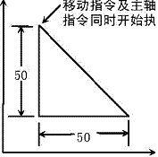
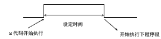
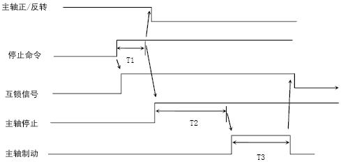

| 辅助功能 |
移动指令和 M同在一个程序段中时，移动指令和M指令同时开始执行。(例) N1 G91 G01 X50.0 Y-50.0 M05 ；(主轴停止)
移动指令及主轴停止指令同时开始执行

主轴正反转,主轴停止,主轴制动时序图及设定时间:


T1: 主轴在转动时,当发出主轴停止(自动或手动)命令后,先使能轴互锁信号,延迟T1 后,
发出主轴停止信号. 设定在诊断号№214. T2: 从发出主轴停止信号到发出主轴制动信号的延迟时间. 设定在诊断号№215/216. T3: 主轴制动时间,设定在诊断号№217/218.
注：1. 当在程序中指定了上述以外的M 代码时，系统将产生以下报警并停止执行。
01：M 代码错
2. M 起动后，即使方式改变，也仍然保持，用手动方式的键也无法关闭，可按‘RESET’关闭。
下面的M代码规定了特殊的使用意义。
1. M30(程序结束)
（1) 表示主程序结束。
（2) 停止自动运转, 处于复位状态。
（3) 返回到主程序开头。
（4) 加工件数加1。
2. M00: 程序停
当执行了M00的程序段后, 停止自动运转。与单程序段停同样, 把其前面的模态信息全部保存起来。CNC开始运转后, 再开始自动运转。
3. M98(调用子程序) 用于调用子程序。
2. 执行M98和 M99时, 代码信号不送出。
| 辅助机能参数 |
诊断号№160～223 为电池保持性PLC参数，用户可根据实际情况进行设定，设定码为二进制数。
设定：打开程序保护开关，在录入方式下，选择诊断画面，移动光标至要设定的序号
注: 1. M00，M30的下一个程序段即使存在, 也存不进缓冲存储器中去。
前，键入二进制数据，按〖输入〗键后，键入的数据输入。移动光标的方法：
（1）用页及光标键
（2）用检索的方法：P→要检索的诊断号→光标键↓。
№208： |
M 代码处理时间。 |
|
设定单位：128 毫秒 |
||
设定码 |
0～255 |
|
设定值 |
(№208＋1)×128毫秒 |
|
设定范围：128毫秒～32.768 秒 |
||
№209： |
S 代码处理时间。 |
|
设定单位：128 毫秒 |
||
设定码 |
0～255 |
|
设定值 |
(№209＋1)×128 毫秒 |
|
设定范围：128毫秒～32.768 秒 |
||
№214： |
发出主轴停止命令后到发出主轴停止信号的延迟时间T1。 |
|
设定单位：16 毫秒 |
||
设定码 |
0～255 |
|
设定值 |
№214×16 毫秒 |
|
| 设定范围：0～4.096 秒 | ||
| №215，216： | 从发出主轴停止信号到发出主轴制动信号的延迟时间。 | |
| 设定单位：16 毫秒 | ||
| 设定码 | 0～65535 | |
| 设定值 | (№216×256＋№215)×16 毫秒 | |
| 设定范围：0～1048.560 秒 | ||
| №217，218： | 主轴制动时间。 | |
| 设定单位：16 毫秒 | ||
| 设定码 | 0～65535 | |
| 设定值 | (№218×256＋№217)×16毫秒 | |
| 设定范围：0～1048.560 秒 | ||
| №219： | 发出外部蜂鸣器输出信号的时间。 | |
| 设定单位：32 毫秒 | ||
| 设定码 | 0～255 | |
| 设定值 | №219×32 毫秒 | |
设定范围：0～8.192 秒 |
||
| 与辅助机能有关的报警 |
与辅助机能有关的报警通过外部信息画面显示，当产生报警时，系统自动切换到外部信息画面，在显示器的上部显示出报警的详细内容，在显示器的下端闪烁显示‘报警’。
01：M 代码错。
程序中编入了非法的M 代码。
02：S 代码错。
程序中编入了非法的S 代码。
03：T 代码错。
程序中编入了非法的T 代码。
06：M03，M04 码指定错。主轴正转（反转）时，没有经过停止而又指定了主轴反转（正转）。
07：主轴旋转时指定了S。
当主轴正在旋转时，指定了S 代码进行主轴换挡。
09：请进行手动主轴换挡，完成后，按循环起动（参数P012 BIT5 SMANL=1）。
10：请进行手动换刀，完成后，按循环起动（参数P012 BIT6 TMANL=1）。
11：主轴单元报警。
12：请手动换主轴低档，完成后，按CAN及循环起动（选择模拟主轴时）。
15：请手动换主轴高档，完成后，按CAN及循环起动（选择模拟主轴时）。